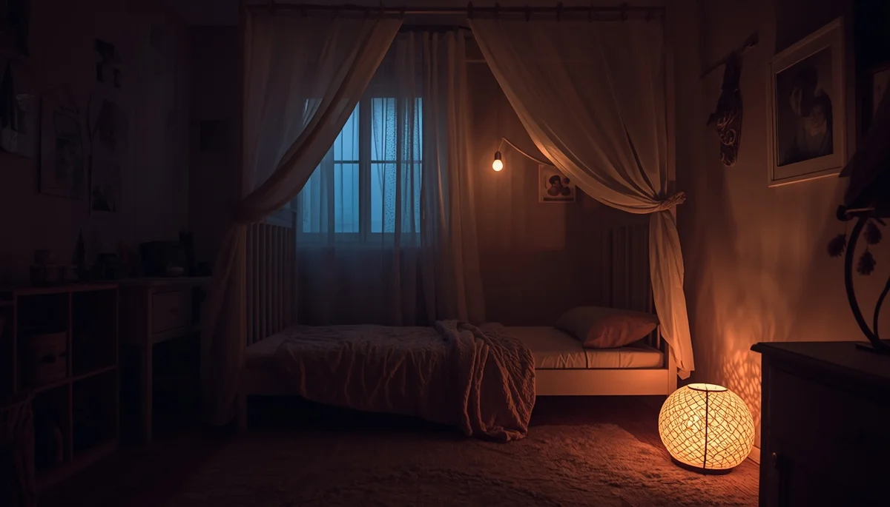
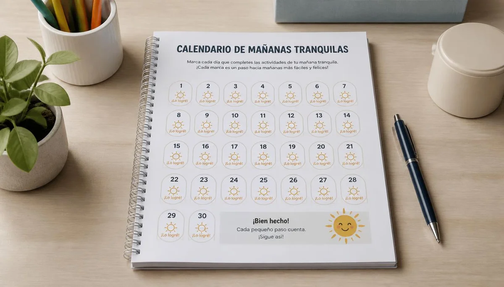
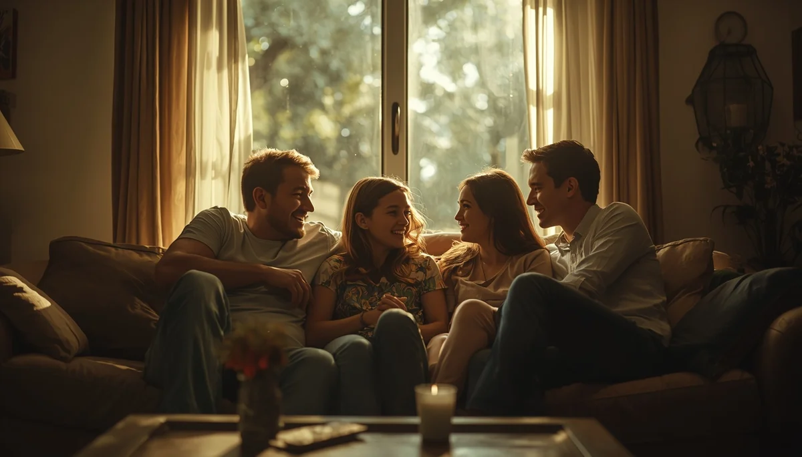

Noches secas, infancias seguras: comprendiendo la enuresis nocturna
El control nocturno de esfínteres es un proceso madurativo que sigue sus propios ritmos biológicos. Cuando aparece la enuresis, las familias a menudo se debaten entre la preocupación y el desconcierto, acumulando mitos sobre la voluntad o la culpa infantil. He querido reunir aquí un mapa amable, basado en el respeto y la evidencia médica, para caminar este proceso sin ruidos, sin prisas y protegiendo la autoestima de los niños. Pincha en cada tarjeta para profundizar en cada tema.

Un refugio frente al tabú
La presión social y la vergüenza a menudo rodean las noches húmedas. Entender que no es un problema de conducta ni de pereza libera al niño de una carga emocional innecesaria y abre paso a la confianza.
Descubrir más ➔
La maduración biológica
La capacidad vesical nocturna, la producción hormonal de la vasopresina y la profundidad del sueño interactúan en un delicado engranaje. Cada cuerpo necesita su propio tiempo de maduración neurológica.
Descubrir más ➔Descartar causas médicas
Observar las señales diurnas y nocturnas con atención nos ayuda a saber cuándo se trata de una enuresis evolutiva simple o cuándo conviene consultar con el pediatra para descartar infecciones u otras causas.
Descubrir más ➔Pautas y rutinas respetuosas
Gestionar la hidratación vespertina sin restricciones drásticas, fomentar la doble micción antes de dormir y evitar los despertares forzados mecánicos facilita un tránsito nocturno más natural y seguro.
Descubrir más ➔
Herramientas de apoyo y seguimiento
El uso de calendarios de noches secas enfocado exclusivamente al refuerzo positivo personal, junto con protectores adecuados y alarmas comprensivas si se decide utilizar, transforma la rutina en equipo.
Descubrir más ➔
Excursiones y pernoctas sin miedo
Dormir fuera de casa en campamentos o excursiones escolares no debe ser un motivo de exclusión. Planificar con naturalidad la gestión discreta de la ropa y el descanso protege su autonomía social.
Descubrir más ➔
Complicidad y equipo en casa
Actuar con discreción ante una sábana mojada, sin comentarios que avergüencen delante de los hermanos, consolida un clima de seguridad donde el error se asume con absoluta normalidad.
Descubrir más ➔Paciencia y salud emocional
El cansancio acumulado de lavar sábanas nocturnas desgasta a los adultos. Recordar que es una etapa transitoria y cuidar el propio descanso parental es vital para sostener el proceso con una sonrisa.
Descubrir más ➔⭐ Continúa profundizando en el autocuidado y la calma
Para acompañar los momentos de gestión familiar y bienestar de forma completa, te sugerimos explorar estos recursos:
- 🎙️ Escucha el podcast: Sanar el agotamiento y la culpa parental (Ep. 09)
- 📥 Descarga el recurso práctico: Guía de Autocuidado para Familias (PDF)